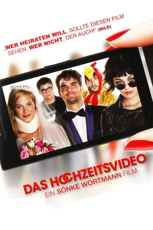

#11512 Das Hochzeitsvideo
 
 IMDB-Wertung: 5.1 / 10
IMDB-Wertung: 5.1 / 10  Metascore: 0
Metascore: 0 
Im noblen Schlossquartier ist schon alles vorbereitet. Die Stimmung ist heiter und das Wetter spielt ausnahmsweise auch einmal mit – ein perfekter Tag zum Heiraten. Pia und Sebastian sind sich einig: Dies ist ihre Traumhochzeit. Da stellen Kleinigkeiten wie die Namensfrage oder die von Grund auf verschiedenen Familienparteien das verliebte Paar vor keine allzu großen Probleme. Auch der eher aufdringliche Daniel – ein guter Freund von Sebastian -, der mit seiner Kamera unaufhörlich alles dokumentiert, um es für YouTube, Facebook oder MyVideo aufzubereiten, scheint das Liebespaar nicht zu stören. Doch je länger der Abend, desto ausgelassener wird gefeiert, getanzt und natürlich auch getrunken. Doch die während der exzessiven Auslebung der Freude, kommen Dinge ans Licht, die für die Nachwelt eigentlich nicht bestimmt waren. Der Abend bietet auf einmal alles, was nicht hätte passieren dürfen: Eifersucht, Sex, Wut, Tränen und ein Überraschungsgast.
Jahr: 2012
Dauer: 85 Minuten
FSK: 12
Land: Deutschland Studio: Constantin FilmTonspuren:
Untertitel:
Auflösung: 1080p (1920x1040) Größe: 3993 MB
Genre: Komödie
Regisseur: Sönke Wortmann
Drehbuch: Gernot Gricksch
Soundtrack:
Darsteller:
- Lisa Bitter als Pia
- Claudio De Simone als Kellner Samuel
- Lucie Heinze als Despair
- Christoph Hofrichter als Kartsen
- Anna Kubin als Biggi
- Michael Abendroth als Waldemar von Stieglitz
- Martin Aselmann als Daniel
- Elmira Bahrami als Mona
 Matthias Brenner als Bruno Schulz
Matthias Brenner als Bruno Schulz- Jan-David Bürger als Bernd
- Simon Eckert als Carlos
- Rainer Galke als Standesbeamter
- Milena Karas als Kioko
- Marian Kindermann als Sebastian
- Tesha Moon Krieg als
- Christiane Lemm als Margarete von Stieglitz
- Artus Maria Matthiessen als Pastor Lüttich
 Lucrezia Phantazia als Jacky
Lucrezia Phantazia als Jacky- Stefan Ruppe als Fabian
- Janina Sachau als Mandy
- Susanne Tremper als Lisa Schulz
- Mascha von Kreisler als Phyllis
Datei: X:\NEU\Hochzeitsvideo, Das (2012, FSK12, 1920x1040).mkv seit 22.07.2019
 Es gibt insgesamt 187 Filme in der Gruppe 'NEU'
Es gibt insgesamt 187 Filme in der Gruppe 'NEU'